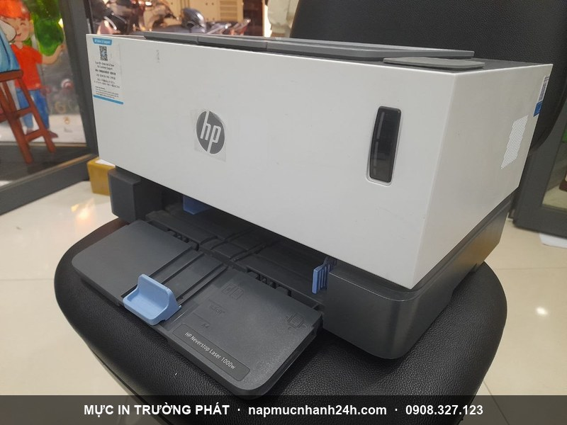
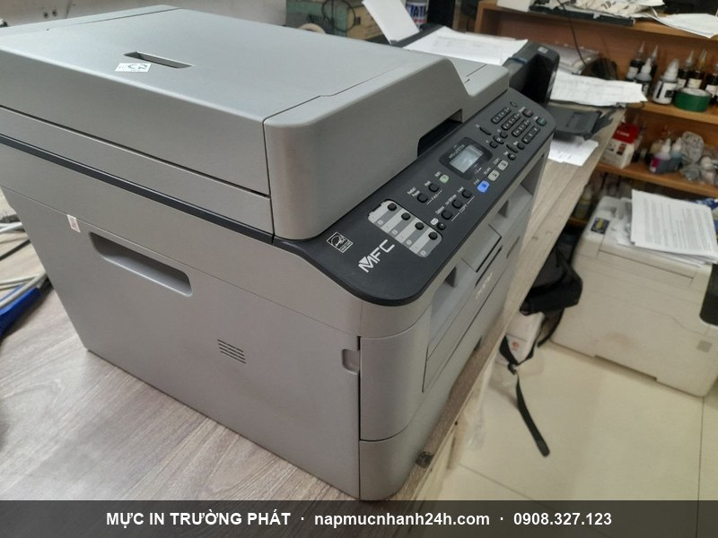

Nạp mực máy in tận nơi Quận 4 - 30 phút có mặt, chỉ từ 90.000đ
Mực In Trường Phát chuyên nạp mực máy in tận nơi tại Quận 4 cho văn phòng, cửa hàng và hộ gia đình. Kỹ thuật có mặt trong 30 phút, đổ mực ngay tại chỗ, in test trước khi tính tiền, bảo hành 1 tháng. Phục vụ 24/7 kể cả thứ 7, chủ nhật và lễ.
Hotline gọi ngay: 0908.327.123 · 0819.007.394 (Zalo cả 2 số)
Nạp mực tận nơi khắp Quận 4

Trường Phát phục vụ toàn bộ Quận 4 - khu Bến Vân Đồn, Khánh Hội, Xóm Chiếu, Vĩnh Hội và dọc Nguyễn Tất Thành, Đoàn Văn Bơ, Tôn Đản, Hoàng Diệu. Quận 4 gần trung tâm, kỹ thuật di chuyển nhanh.
Nhận nạp mực mọi hãng HP, Canon, Brother, Epson, Samsung, Xerox, Ricoh - laser đen trắng, laser màu, máy in phun, máy in kim.
Bảng giá nạp mực máy in Quận 4
| Loại máy | Giá tận nơi |
|---|---|
| Laser đen trắng phổ thông (HP, Canon thông dụng) | 90.000đ |
| Laser đen trắng cao cấp (Samsung, Xerox, Brother, Ricoh) | 120.000 - 180.000đ |
| Laser màu (HP, Canon, Brother, Oki) | 250.000 - 450.000đ / màu |
| Máy in phun (Canon, Epson, HP, Brother) | 40.000 - 80.000đ / màu |
| Mực kim (Ruy băng) Epson LQ 300/310/2170/2180 | 120.000đ |
Giá gồm công thợ + mực chính hãng + di chuyển. Xem bảng giá đầy đủ.
Quy trình nạp mực tận nơi
- Tiếp nhận yêu cầu qua hotline/Zalo, xác nhận lịch + địa chỉ.
- Kỹ thuật có mặt trong 30 phút, kiểm tra máy + hộp mực.
- Báo giá trước, chỉ làm khi khách đồng ý.
- Tháo, vệ sinh, đổ mực mới đúng dòng, reset chip nếu cần.
- In test 3-5 trang - chỉ thu tiền khi khách hài lòng.
Máy lỗi nặng? Xem sửa máy in tận nơi TP.HCM.
Khu vực lân cận
Trường Phát phục vụ cả khu giáp ranh Quận 4: Quận 1, Quận 7 và Quận 8.

Liên hệ nạp mực Quận 4
- Hotline 1: 0908.327.123 (Zalo · Telegram)
- Hotline 2: 0819.007.394 (Zalo · Telegram)
- Hoạt động: 24/7, kể cả lễ tết · Phục vụ: toàn Quận 4 + lân cận